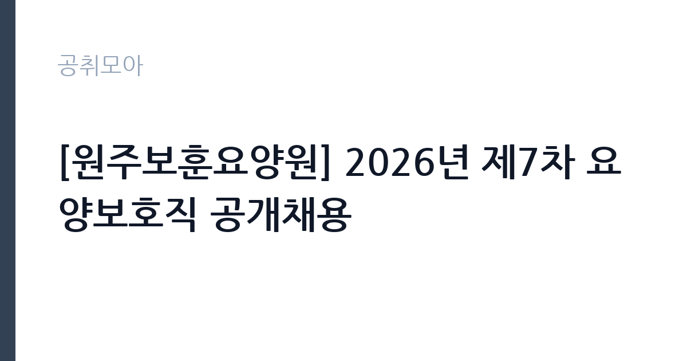

[공공기관] [원주보훈요양원] 2026년 제7차 요양보호직 공개채용
한국보훈복지의료공단 · 강원 · 마감 2026-11-18 (D-15) · 출처 잡알리오

한눈에 보는 모집 조건
| 기관 | 한국보훈복지의료공단 |
|---|---|
| 공고명 | [원주보훈요양원] 2026년 제7차 요양보호직 공개채용 |
| 고용형태 | 정규직 |
| 근무지 | 강원 |
| 게시일 | 2026-11-03 |
| 마감일 | 2026-11-18 (D-15) |
지원자격, 이렇게 읽으세요
- 요양보호사 자격증 소지자로 3교대 근무 가능한 자
- ※ 합격증 소지자 지원가능(최초 임용예정일 이전 자격증 제출 필수)
정규직 채용은 기간의 정함이 없는 근로계약을 전제로 합니다. 수습 기간을 두고 평가한 뒤 정규직으로 확정하는 절차가 일반적이며 기관의 인사 규정과 임금 체계를 적용받습니다. 이번 공고는 한국보훈복지의료공단이 직접 진행하는 자체 전형입니다. 요양보호사 자격증 소지자가 필수이고, 자격 취득 예정자나 합격증 소지자도 지원할 수 있으나 최초 임용예정일 이전까지 자격증을 제출해야 합니다. 3교대 근무가 가능해야 하고, 공단 인사규정 제44조에 따른 정년인 만 60세를 초과하지 않아야 합니다. 결격사유가 없어야 하고 남자는 병역을 마쳤거나 면제되어야 합니다. 정규직 채용으로 수습 기간을 거쳐 확정되는 절차를 밟습니다. 제출서류는 공고문에 적힌 순서대로 정리하면 담당자가 확인하기 쉽습니다. 자격증은 유효 기간과 등록 상태를 확인해야 합니다. 갱신이 필요한 자격이라면 갱신 여부를 먼저 점검하십시오. 동일 직무 경력자와 경쟁하게 되므로, 관련 경험이 있다면 증명서에 업무 내용이 구체적으로 적히도록 요청하십시오. 이 공고 원문에 적힌 응시 조건 문구는 '요양보호사 자격증 소지자로 3교대 근무 가능한 자' / '※ 합격증 소지자 지원가능(최초 임용예정일 이전 자격증 제출 필수)'입니다. 문구를 그대로 읽고 본인 해당 여부를 하나씩 표시해 두면 서류 단계에서 탈락하는 일을 줄일 수 있습니다.
이 공고의 포인트
이 공고의 첫 번째 포인트는 고용 형태입니다. 수습 기간 평가를 통과하면 기간의 정함이 없는 신분이 되어 고용이 안정됩니다. 두 번째는 업무 범위가 명확하다는 점입니다. 요양보호직 직무로 채용되므로 배치 이후 담당 업무가 크게 흔들리지 않습니다. 세 번째는 근무지입니다. 강원 지역 근무로 수도권 공고에 비해 지원자 분포가 넓지 않아 상대적으로 경쟁이 분산되는 경우가 있습니다. 지역 기반 채용이라 거주지와 통근 가능성이 실질적인 판단 기준이 됩니다. 같은 직무로 함께 올라온 공고 가운데 접수 마감이 가장 늦은 편이라 준비 시간을 상대적으로 확보할 수 있습니다. 선발 인원은 공고문에 명시되어 있으니 모집분야 항목을 함께 확인하십시오.
전형은 어떻게 진행되나
1차 서류, 2차 면접의 2단계로 진행되는 구성이 일반적입니다. 서류에서는 자격 요건과 경력 증빙을 확인하고, 면접에서는 실제 업무 수행 능력과 조직 적응을 봅니다. 직무에 따라 필기시험이나 실기, 컴퓨터 활용 시험이 추가되기도 하므로 공고문의 전형표를 먼저 확인하십시오. 단계별로 합격자만 다음 전형에 응시할 수 있고, 단계마다 응시 자격 확인 서류를 다시 제출해야 하는 경우가 있습니다. 최종합격자 발표 후에는 신원조회와 채용 신체검사가 남아 있습니다. 온라인 접수는 마감 시각이 분 단위로 정해지므로 시스템 시간을 기준으로 판단해야 합니다.
원문에서 확인한 전형 방식
[요양보호직] ㅇ 공단 인사규정 제18조(결격사유)에 해당하지 않는 자 ㅇ 공단 인사규정 제44조에 따른 정년(60세)을 초과하지 않는 자 ㅇ 남자의 경우 병역을 필하였거나 면제된 자 ㅇ 요양보호사 자격증 소지자로 3교대 근무 가능한 자 ※ 합격증 소지자 지원가능(최초 임용예정일 이전 자격증 제출 필수)
이런 분께 추천해요
- 요양보호사 자격증을 보유했거나 취득 예정인 분
- 3교대 근무를 지속할 수 있는 체력과 책임감이 있는 분
- 어르신 돌봄 경험이 있는 분
지원 전 체크리스트
- 응시자격 요건과 경력 기준을 충족하는가 — 경력은 증명서로 입증해야 합니다
- 수습 기간과 정규직 전환 조건을 확인했는가
- 제출서류 목록을 모두 준비했는가 — 누락 시 서류 단계에서 탈락합니다
- 접수 마감 2026-11-18 이전에 접수 방식을 확인해 제출했는가
모집 일정과 제출 타이밍
2026-11-03에 공고가 올라왔고 접수는 2026-11-18까지입니다. 남은 기간은 15일이며, 이 기간에 자격증 사본과 경력증명서, 주민등록등본 같은 기본 서류를 모두 준비해야 합니다. 경력증명서는 발급에 며칠이 걸리는 경우가 있으니 가장 먼저 신청하십시오. 접수는 온라인과 우편·방문으로 나뉘는 경우가 많고, 우편 접수는 도착 기준으로 판정되므로 마감일 소인만 믿으면 안 됩니다. 면접 일정은 서류 발표 후 개별 통보되므로 제출 후에도 연락을 받을 수 있도록 유지해야 합니다. 제출 서류는 공고문에 적힌 순서대로 정리하면 담당자가 확인하기 쉬워 누락이 줄어듭니다.
직무 이해하기: 공공기관
원주보훈요양원 요양보호직은 국가유공자와 보훈대상 어르신의 일상생활을 돌보는 업무를 맡습니다. 식사와 이동, 목욕, 배설, 체위 변경 같은 신체 활동을 지원하고, 건강 상태 변화를 관찰해 간호 인력에게 전달합니다. 여가 활동과 프로그램 진행을 돕고, 생활 기록을 남깁니다. 3교대로 근무하며 야간에는 순회와 긴급 상황 대응이 포함됩니다. 입소자 가족과의 면담 응대도 업무의 일부입니다. 업무 매뉴얼과 지침이 문서로 정리되어 있어 절차를 익히면 반복 업무는 빠르게 손에 붙습니다.
자기소개서 작성 팁
지원서는 돌봄 경험을 대상과 상황 중심으로 정리하는 것이 설득력 있습니다. 요양원·병원·재가 돌봄에서 맡았던 업무와 돌본 인원, 어려운 상황을 해결한 사례를 구체적으로 쓰십시오. 요양보호사 자격 취득 과정과 실습 경험도 좋은 소재입니다. 국가유공자를 모시는 기관이라는 성격을 이해하고 있다는 점을 한 문단 더하면 차별화됩니다. 구성은 지원 동기, 직무 경험, 기여 방안 순서가 무난합니다. 지원 동기는 한국보훈복지의료공단의 사업 중 본인이 관심을 가진 부분을 한 가지로 좁혀 서술하고 추상적인 표현은 줄이십시오. 직무 경험은 담당했던 업무와 규모, 결과를 수치로 제시하면 설득력이 올라갑니다. 기여 방안은 입사 후 첫 3개월과 1년 계획으로 나눠 쓰면 준비도가 드러납니다.
면접 준비 포인트
면접에서는 돌봄 실무와 상황 판단을 확인합니다. 입소자가 식사를 거부할 때 어떻게 대응할지, 야간에 낙상이 발생하면 어떤 순서로 조치할지 묻습니다. 어르신과 가족의 요구가 다를 때 어떻게 조율했는지도 질문 대상입니다. 3교대 근무를 장기간 감당할 수 있는지, 체력 관리 방법을 어떻게 세우고 있는지 답하십시오. 마지막 질문 시간에는 근무 조건에 대한 확인 사항을 한 가지 정도 준비해 가면 성실성이 드러납니다. 답변 시간이 짧게 정해져 있는 경우가 있으므로 핵심 문장을 먼저 말하고 근거를 붙이는 방식이 유리합니다.
급여·근무조건 읽는 법
한국보훈복지의료공단은 알리오 2025년 결산 공시 기준 일반정규직 1인당 평균보수 7,172만원, 신입사원 초임 4,170만원입니다. 평균보수는 기본급에 고정수당·성과상여금·급여성 복리후생비를 모두 합산한 값이라 월 기본급과 차이가 큽니다. 요양보호직은 별도 임금표가 적용되고, 3교대 근무에 따른 야간·휴일수당이 붙어 실수령액이 달라집니다. 호봉과 수당 항목은 공고문 처우표에서 확인하십시오. 2026년 적용 최저임금은 시급 10,320원, 월 환산 2,156,880원(주 40시간·209시간 기준)입니다. 고용노동부 고시 제2025-47호로 확정된 금액입니다. 공고문에 금액이 제시되지 않은 항목은 원문 보수표나 처우 설명에서 확인해야 하며 확인되지 않은 수치는 쓰지 않는 것이 원칙입니다. 비교할 때는 월 급여뿐 아니라 상여·명절휴가비·복지포인트·초과근무수당까지 포함한 연간 총액으로 계산하십시오. 기간제라면 계약 기간 동안의 총액을, 무기계약이라면 호봉 상승과 정년까지의 누적 소득을 기준으로 판단하는 편이 정확합니다.
자주 묻는 질문
- 선발 인원은 몇 명인가요?
공고문의 모집분야 항목에 직종별 인원이 표로 제시되어 있습니다. 첨부된 공고문 원문에서 확인하십시오. - 근무지는 어디인가요?
강원 지역의 한국보훈복지의료공단 소속 근무지입니다. 세부 주소와 출퇴근 조건은 원문 공고문에서 확인할 수 있습니다. - 보수는 얼마인가요?
채용 신분(정규직)과 기관 임금 규정에 따라 정해지며 구체적인 금액은 공고문 처우 항목에 제시됩니다. 금액이 공개되지 않은 경우에는 원문의 보수표를 확인하십시오.
함께 보면 좋은 공고
[공공기관] 한전KDN(주) 경남사업처 배전자동화 성능관리분야 비정규직 모집공고 — 마감 2026-11-18[공공기관] 한국폴리텍대학 남대구캠퍼스 업무직(대학운영직_조리사) 채용(2차) 공고 — 마감 2026-11-11[공공기관] 한국폴리텍대학 남대구캠퍼스 행정지원직원(휴직대체_학사지원직) 채용 공고 — 마감 2026-11-11출처: 잡알리오 공개정보를 바탕으로 공취모아가 정리한 안내글입니다. 모집 조건·일정은 변경될 수 있으니 지원 전 반드시 원문 공고문을 확인하세요. 본 글은 정보 제공용이며 합격을 보장하지 않습니다.